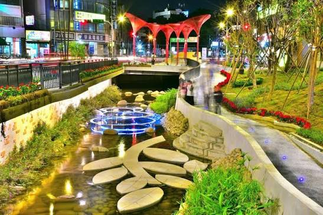

被覆蓋的水圳
停車場
水圳被鋼筋水泥覆蓋，空間轉作停車等都市使用。
想一想：
當水圳被蓋住，我們失去了什麼？
當水圳被蓋住，我們失去了什麼？

FENGYUAN · WATERFRONT CITY
葫蘆墩圳與豐原的生活、農業與地方文化有長久的關係。 今天，我們一起從水岸花都出發，看看水圳如何從被覆蓋的空間， 重新成為人們可以親近的水岸。
水圳不只是水，也和城市的空間、產業、文化與生活有關。
同一個地方，在不同時代可能有完全不同的用途。
如果交給你設計，你會怎麼讓水岸更適合未來的城市？
TIME TRAVEL
滑動時間軸，看看空間用途如何改變。
水圳被鋼筋水泥覆蓋，空間轉作停車等都市使用。
葫蘆墩圳掀蓋工程展開，讓被覆蓋的水道重新回到城市視野。
水岸空間加入景觀、綠化與親水環境，成為城市公共空間的一部分。
SUSTAINABLE CITY
想讓城市更能面對未來，我們可以從「水、安全、環境、生活」一起思考。
讓雨水有機會向下滲透，減少地表逕流。
關鍵字：保水在工程與環境之間尋找更友善的做法，兼顧水岸與生態。
關鍵字：生態把雨水留下來，讓水資源可以被再利用。
關鍵字：雨水利用植生與地形協助處理地表逕流水，創造水岸生態空間。
關鍵字：淨化作為都市水環境中的排水與水流通道設施。
關鍵字：水安全LOCAL CULTURE
理想的水岸不只有工程設施，也可以放進豐原的地方文化。
YOUR WATERFRONT
選一個圖示，再點擊地圖，把它放到你認為適合的位置。